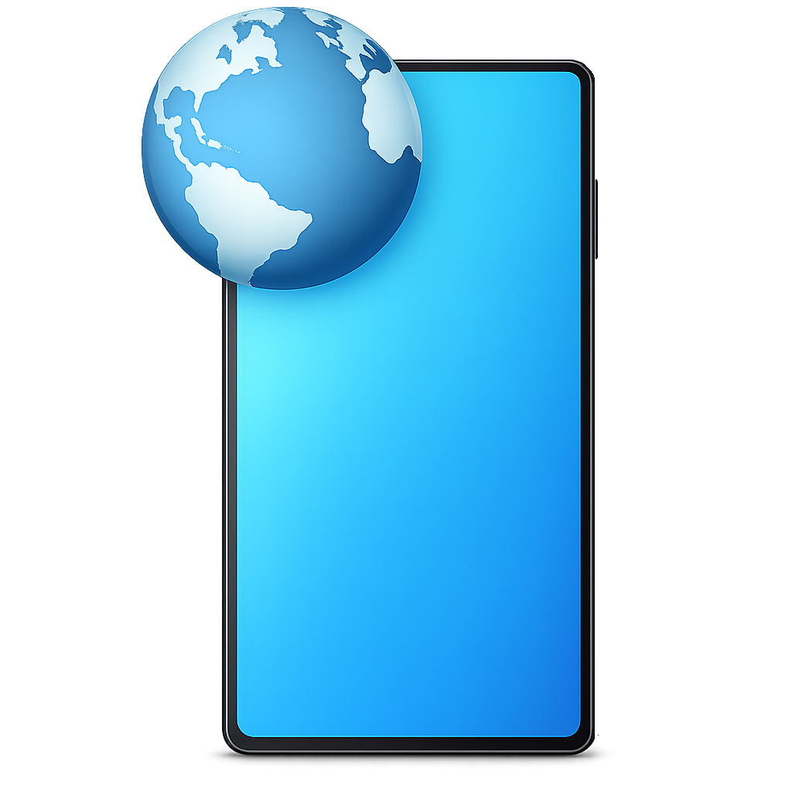

This address belongs to a NetworkShare WebDAV server running on your local network. It cannot be browsed directly in a web browser — you need to open it using Windows Explorer or any other WebDAV-compatible client.
Copy the network path below and paste it into the address bar of Windows Explorer:
How to open in Windows Explorer:
1. Press Win + E to open File Explorer.
2. Click the address bar at the top.
3. Paste the path above and press Enter.
4. Enter your username and password when prompted.